Anime & gaming wallpapers
Wallpapers that actually look good on your phone
Anime & gaming wallpapers, explained. Character art breakdowns, cropping advice and honest game write-ups — no clickbait, no thin filler.
Latest news
New
The Detective Is Already Dead Season 2: Episode Guide, Schedule and Review (2026)
Season 2 is airing now. Full episode list, weekly release schedule, new cast, the official story setup and where to watch The Detective Is Already Dead Season 2.

The Detective Is Already Dead Season 1: Complete Guide and Review (All 12 Episodes)
Every episode of The Detective Is Already Dead Season 1 explained — Siesta, Kimihiko, the case that started it all, and why the 2021 anime divided its audience.
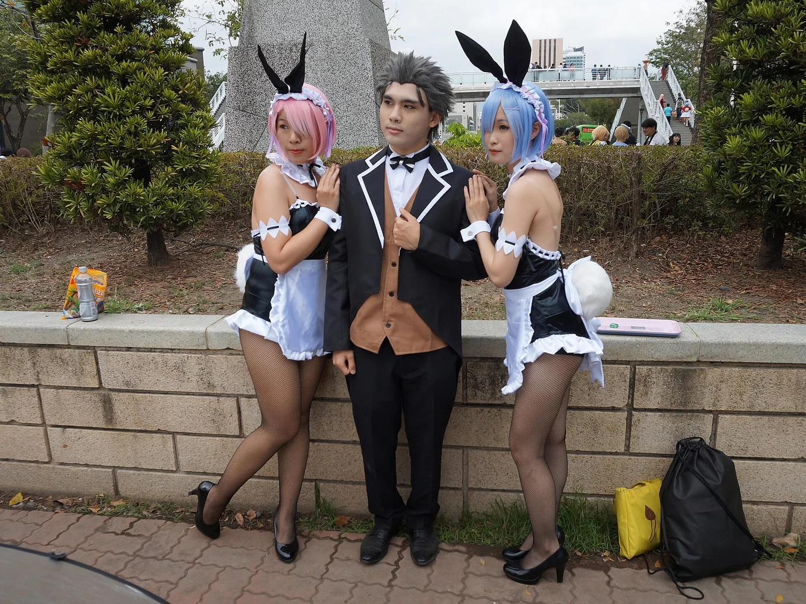
Re:Zero Seasons 1-3: The Complete Story So Far (Every Arc Explained)
Everything that happens in Re:Zero before Season 4 - the Return by Death rule, the Roswaal mansion, the Sanctuary, and the battle for Priestella - explained arc by arc.
Latest articles
7 posts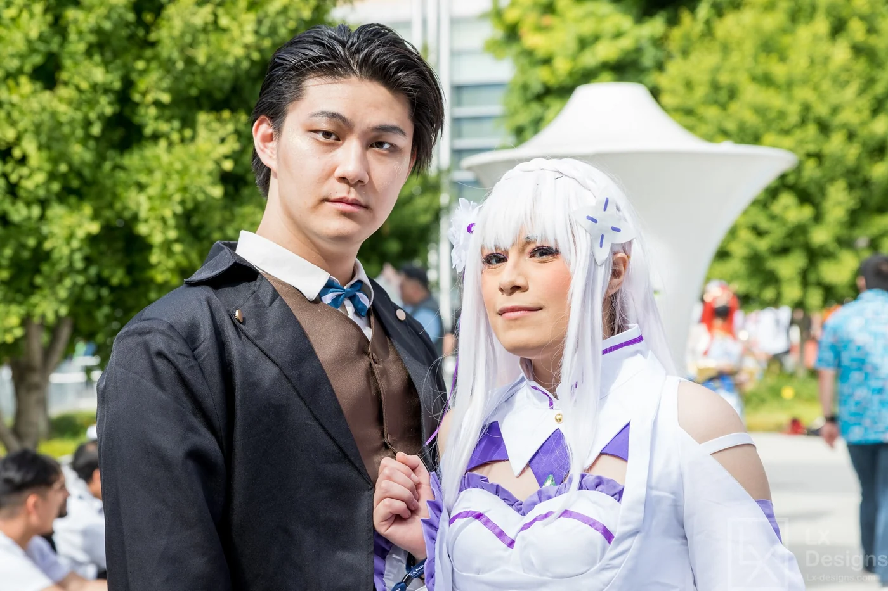
Re:Zero Season 4: The Complete Guide to the Loss and Recapture Arcs
Re:Zero Season 4 ran for 19 episodes in 2026 and adapted Arc 6. Here is what happens in the Loss Arc and the Recapture Arc, who is behind Subaru's amnesia, and how it ends.
Cyberpunk: Edgerunners 2 Review: Night City Burns Again
Cyberpunk: Edgerunners 2 is out now on Netflix - all 10 episodes. A standalone story with a new crew, a new director and The Cure on the opening credits. Here is everything you need to know.
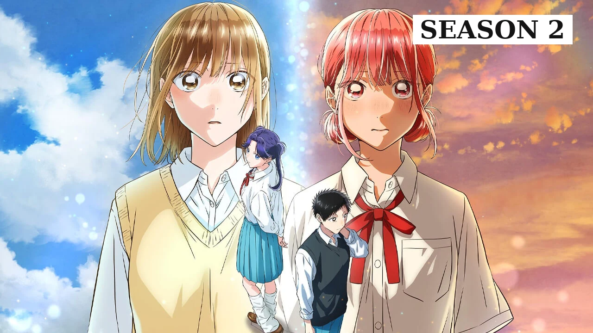
Blue Box Season 2: Complete Episode Guide (Airing Now, 2026)
Everything about Blue Box Season 2 - the new studio, the new characters, the Winter Cup arc and an episode-by-episode guide to the season as it airs, updated through episode 4.
Blue Box Season 1: Complete Episode Guide (All 25 Episodes Explained)
Every episode of Blue Box Season 1 explained - all 25 episodes of Ao no Hako, from the first morning at the gym to the finale, plus characters, staff, music and where to watch.
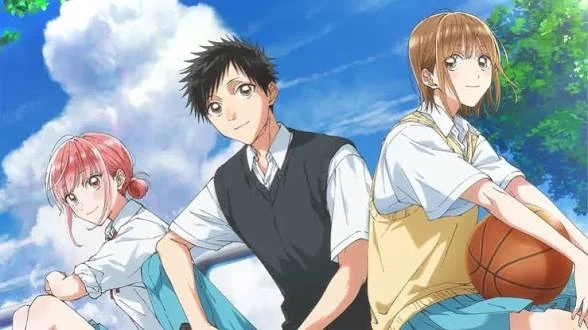
Blue Box Season 1 & 2: A Short Overview (What to Know Before You Watch)
A quick, spoiler-light overview of Blue Box - what the show is, how Season 1 and Season 2 differ, who the characters are, and whether it is worth your time.
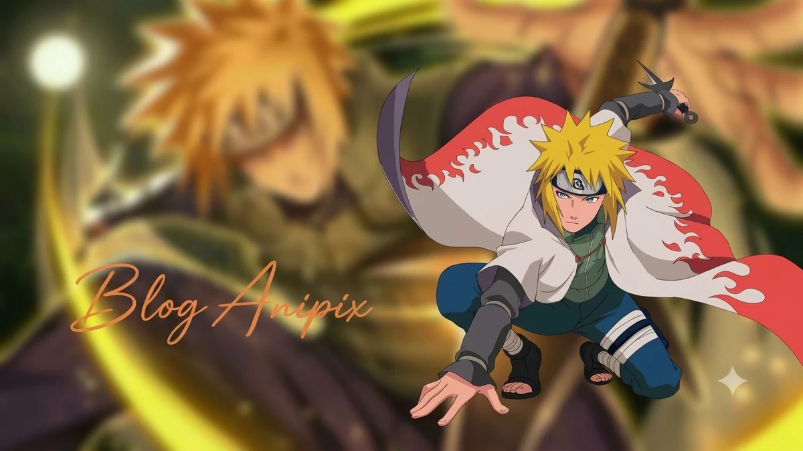
Naruto Shippuden Part 9: Seasons 14-15 (Episodes 296-348) - Every Episode Explained
Episode-by-episode guide to Naruto Shippuden Seasons 14 and 15 - Madara Uchiha arrives, the Five Kage fight, and the truth about Itachi, all 53 episodes with a summary of each.
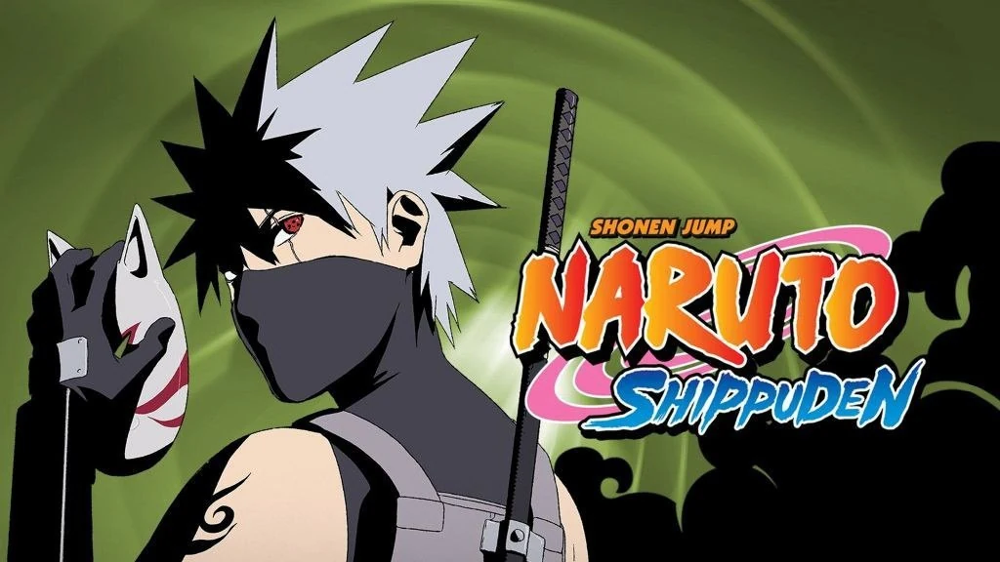
Naruto Shippuden Part 8: Seasons 12-13 (Episodes 243-295) - Every Episode Explained
Episode-by-episode guide to Naruto Shippuden Seasons 12 and 13 - the start of the Fourth Great Ninja War and the Seven Ninja Swordsmen, all 53 episodes with a summary of each.
More from the blog
Archive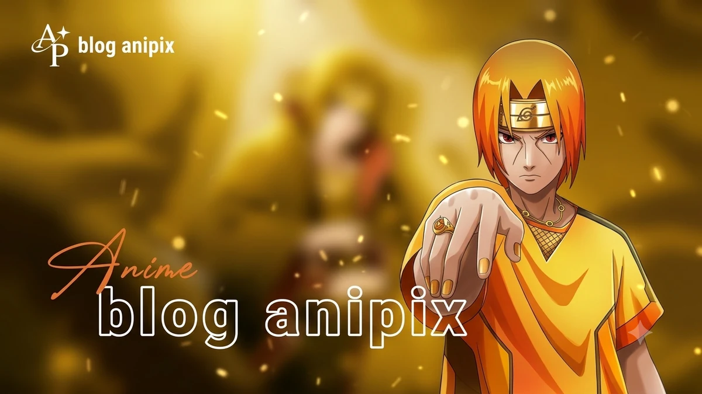
Naruto Shippuden Part 7: Seasons 10-11 (Episodes 197-242) - Every Episode Explained
Episode-by-episode guide to Naruto Shippuden Seasons 10 and 11 - the Five Kage Summit and the Paradise Life on a Boat arc, all 46 episodes with a summary of each.
Naruto Shippuden Part 6: Seasons 8-9 (Episodes 152-196) - Every Episode Explained
Episode-by-episode guide to Naruto Shippuden Seasons 8 and 9 - Pain's Assault on Konoha and the Past Arc, all 45 episodes with a summary of each.
Naruto Shippuden Part 5: Seasons 6-7 (Episodes 113-151) - Every Episode Explained
Episode-by-episode guide to Naruto Shippuden Seasons 6 and 7 - the Itachi Pursuit Mission, the Kakashi Gaiden flashback and the Sasuke-Itachi fight, all 39 episodes.
Naruto Shippuden Part 4: Seasons 4-5 (Episodes 72-112) - Every Episode Explained
Episode-by-episode guide to Naruto Shippuden Seasons 4 and 5 - the Akatsuki Suppression Mission and the Three-Tails arc, all 41 episodes with a summary of each.
Naruto Shippuden Part 3: Season 3 (Episodes 54-71) - Every Episode Explained
Episode-by-episode guide to Naruto Shippuden Season 3 - all 18 episodes of the Twelve Guardian Ninja arc, the anime-only season that gives Naruto his wind training.
Naruto Shippuden Part 2: Season 2 (Episodes 33-53) - Every Episode Explained
Episode-by-episode guide to Naruto Shippuden Season 2 - all 21 episodes of the Tenchi Bridge Reconnaissance arc, with a summary and review of each one.
Naruto Shippuden Part 13: Season 22 (Episodes 480-500) - Every Episode Explained
Episode-by-episode guide to Naruto Shippuden Season 22 - the final season, from Sasuke Shinden to Naruto's wedding, all 21 episodes with a summary of each.
Naruto Shippuden Part 12: Seasons 20-21 (Episodes 414-479) - Every Episode Explained
Episode-by-episode guide to Naruto Shippuden Seasons 20 and 21 - the Infinite Tsukuyomi, Kaguya, and the final Naruto vs Sasuke battle, all 66 episodes with a summary of each.
Naruto Shippuden Part 11: Seasons 18-19 (Episodes 373-413) - Every Episode Explained
Episode-by-episode guide to Naruto Shippuden Seasons 18 and 19 - Team 7 reunited, the fight against Obito and Madara, and the Chunin Exams arc, all 41 episodes with a summary of each.
Naruto Shippuden Part 10: Seasons 16-17 (Episodes 349-372) - Every Episode Explained
Episode-by-episode guide to Naruto Shippuden Seasons 16 and 17 - the Kakashi ANBU arc and the return of Team 7, all 24 episodes with a summary of each.
Naruto Shippuden Part 1: Season 1 (Episodes 1-32) - Every Episode Explained
Episode-by-episode guide to Naruto Shippuden Season 1 - all 32 episodes of the Kazekage Rescue arc, with a summary and review of each one.
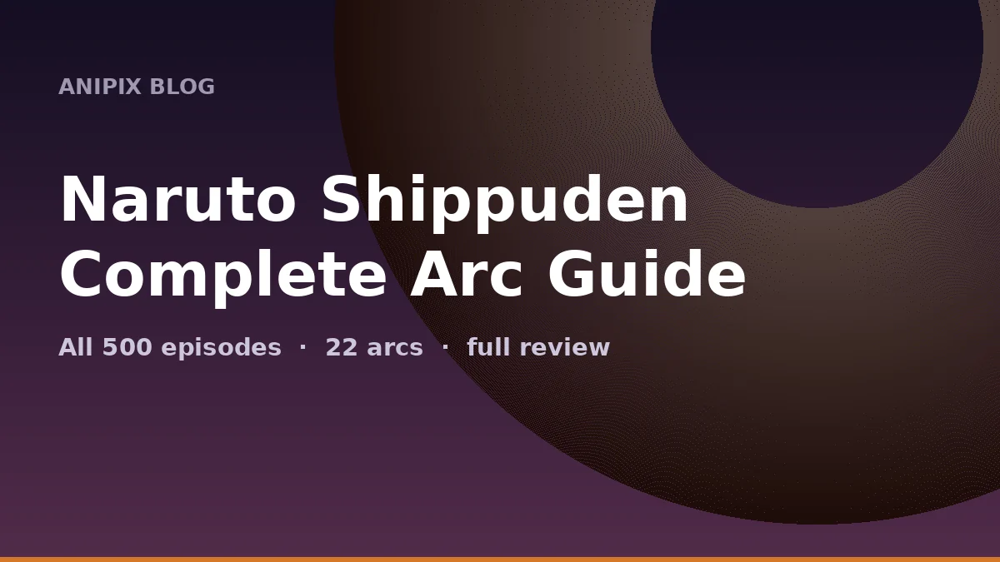
Naruto Shippuden: Complete Arc Guide, Every Episode Explained and Full Review
Every Naruto Shippuden arc in order, with episode ranges, what happens, which arcs are filler, and a review of all 500 episodes. A complete watch guide.
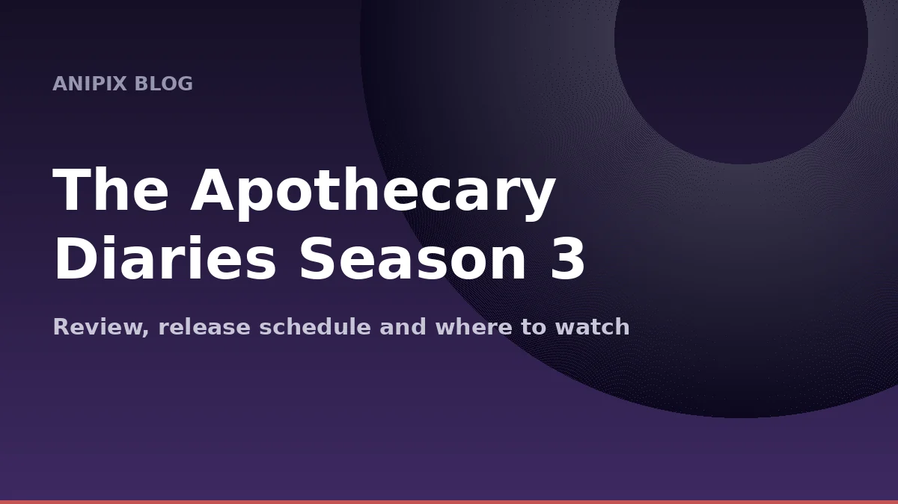
The Apothecary Diaries Season 3: Review, Release Schedule and Where to Watch
The Apothecary Diaries Season 3 is the most-watched anime of Fall 2026. What the new season covers, its episode schedule, scores from MAL and AniList, and whether it is worth watching.
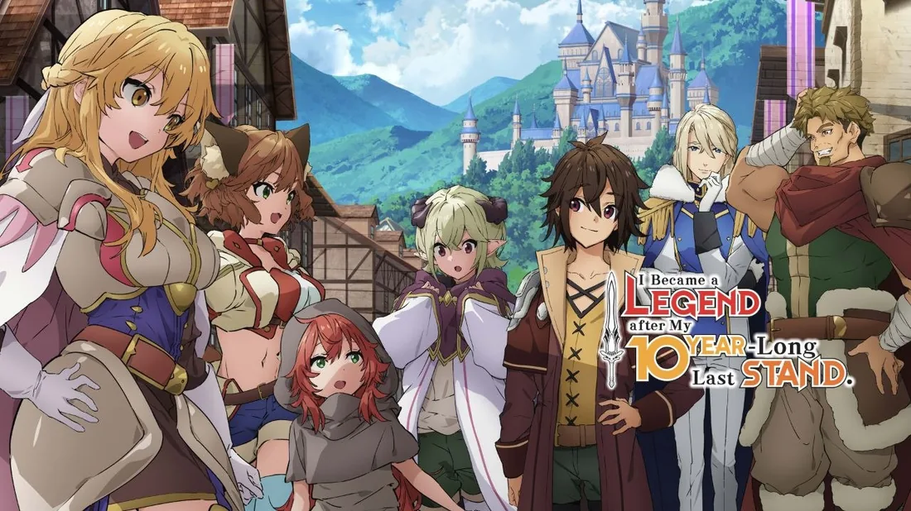
I Became a Legend After My 10 Year-Long Last Stand: Full Review, Every Episode and Ratings (2026)
Full review of I Became a Legend After My 10 Year-Long Last Stand - episode-by-episode summary of all 12 episodes, ratings from MAL, AniList and Crunchyroll, and whether it is worth watching.
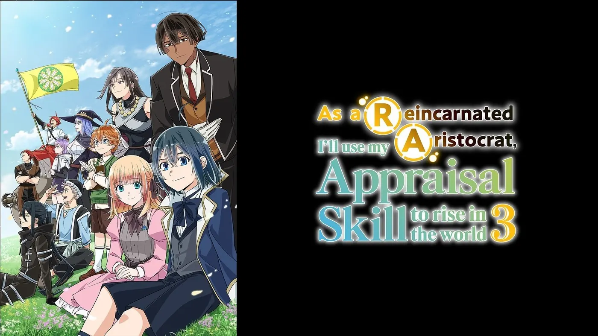
As a Reincarnated Aristocrat - Season 3 Review (Airing Now)
Season 3 of As a Reincarnated Aristocrat, I'll Use My Appraisal Skill to Rise in the World - episode summaries, the studio change explained, schedule and early verdict.
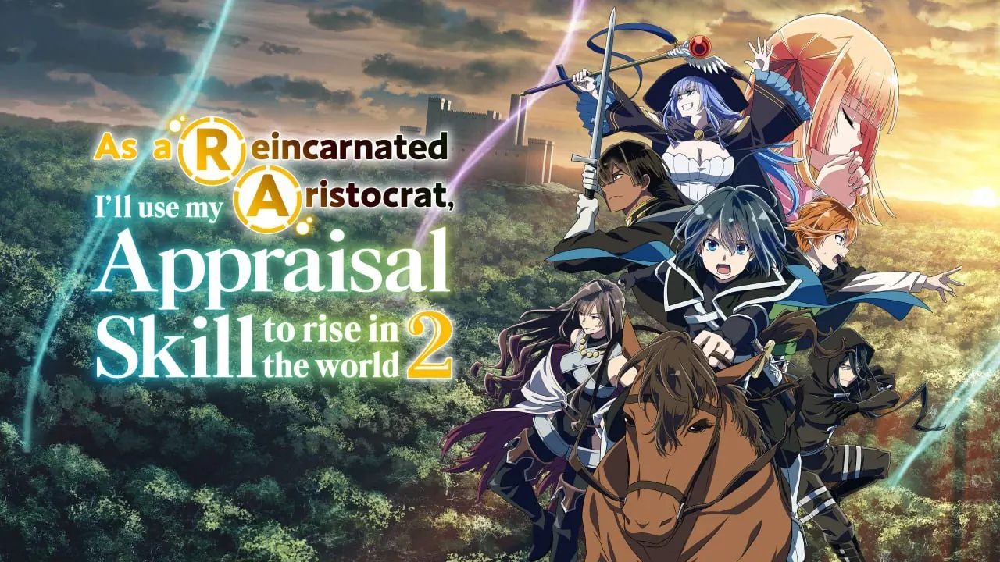
As a Reincarnated Aristocrat - Season 2 Review: War and Strategy
Episode-by-episode review of Season 2 of As a Reincarnated Aristocrat, I'll Use My Appraisal Skill to Rise in the World - the Missian war, ratings and verdict.
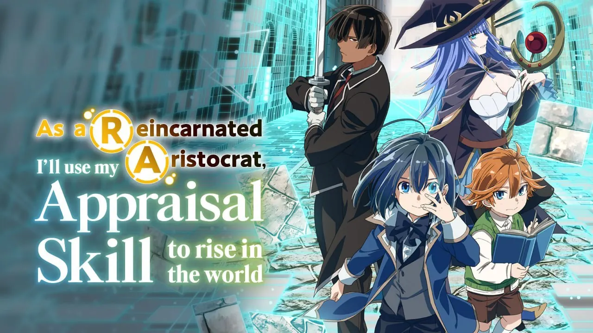
As a Reincarnated Aristocrat - Season 1 Review: Every Episode
A full episode-by-episode review of As a Reincarnated Aristocrat, I'll Use My Appraisal Skill to Rise in the World Season 1 - ratings, plot summaries and an honest verdict.
As a Reincarnated Aristocrat - Complete Guide to Season 1-3
Everything about As a Reincarnated Aristocrat, I'll Use My Appraisal Skill to Rise in the World: full Season 1-3 recap, timeline, characters, ratings and where to start.
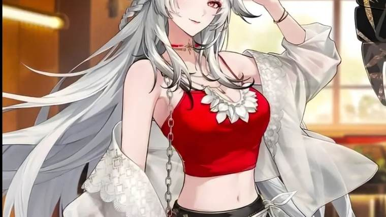
Wuthering Waves 3.7 and 3.8: Hsin, Suoming and Lily Explained
Wuthering Waves 3.7 banner schedule, the new Resonators Hsin and Suoming, and everything known so far about 3.8's Lily.
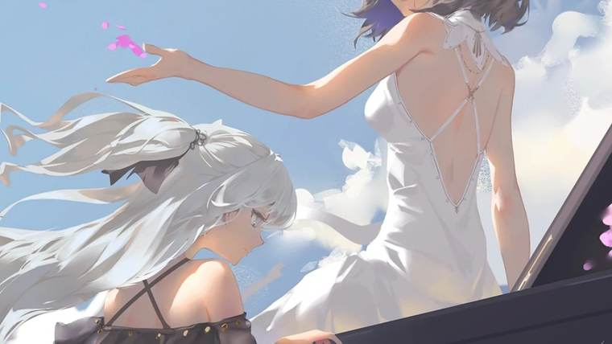
The Most Anticipated Anime Games of 2027 (and What We Know So Far)
Azur Promilia, Neverness to Everness, Solo Leveling: KARMA and more — the anime games to watch in 2027 and what is actually confirmed.
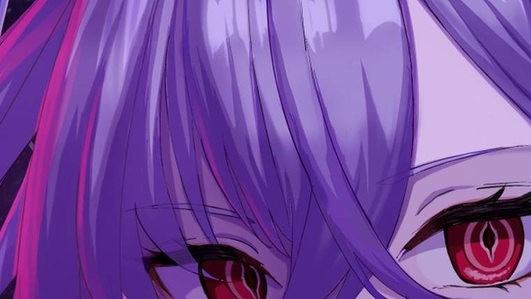
Genshin Impact 7.1 Banners: Vesna, Vodyanitsa and the Skirk Rerun
Genshin Impact 7.1 banners explained: the new 5-stars Vesna and Vodyanitsa, the Skirk and Escoffier reruns, weapons, dates and what to pull.
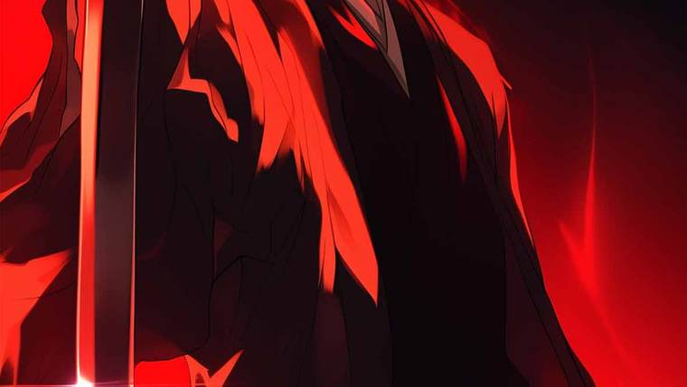
Fall 2026 Anime: The Complete Watch List and Release Dates
Every major anime airing in October 2026 — JoJo's Steel Ball Run, the Bleach finale and The Apothecary Diaries Season 3 — with release dates and how to plan your watchlist.
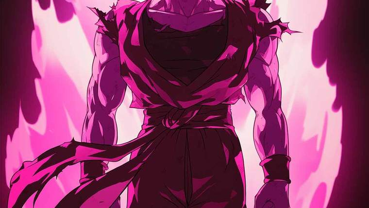
Dragon Ball Super: Beerus — Premiere Date, Cast, Themes and Everything Confirmed
Dragon Ball Super: Beerus premieres on 11 October 2026. Here is every confirmed detail — the themes, the staff, and the New York Comic Con premiere screening.
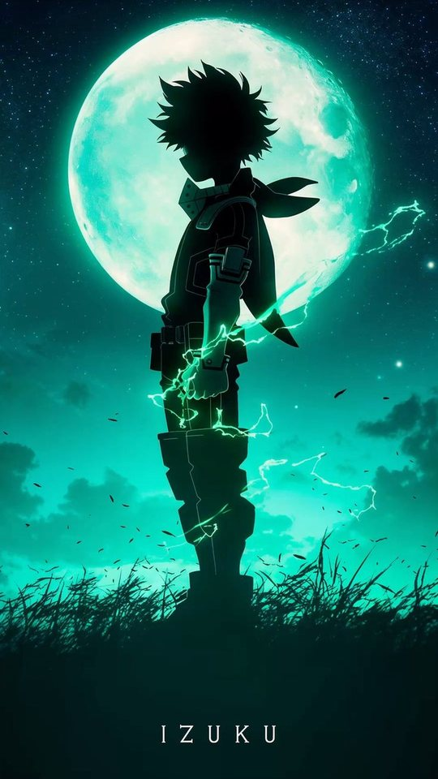
My Hero Academia Wallpapers: From Deku to All Might
My Hero Academia is one of the boldest-looking anime on television, and that boldness is exactly what makes it work as a phone wallpaper. This guide looks…
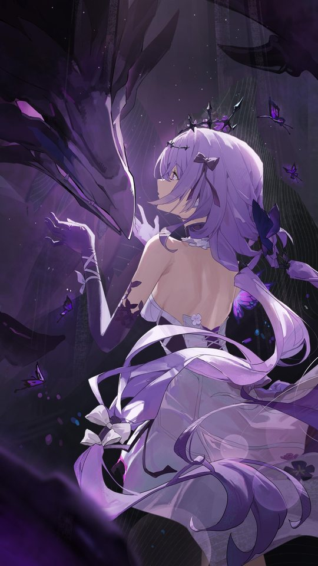
Anime Gacha Games Worth Your Storage Space
Gacha games are easy to install and hard to judge, because the thing that makes them good or bad only shows up after you have played for a week. This…
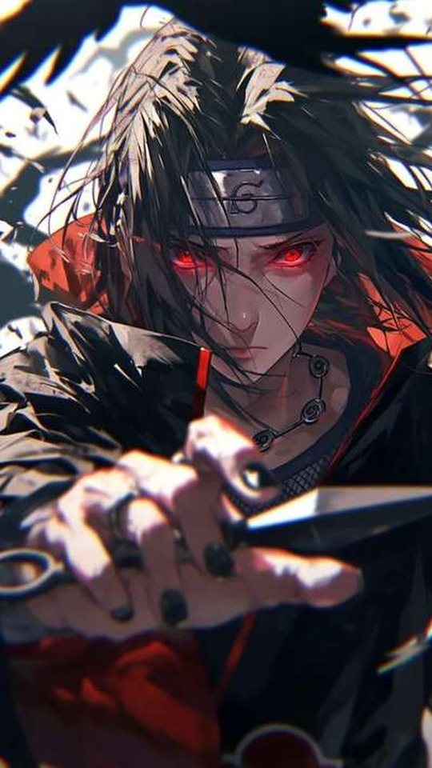
Naruto vs Boruto: Which Characters Make Better Wallpapers?
Naruto and Boruto are set in the same world but drawn in two very different visual languages, and that difference shows up the moment you put them side by…
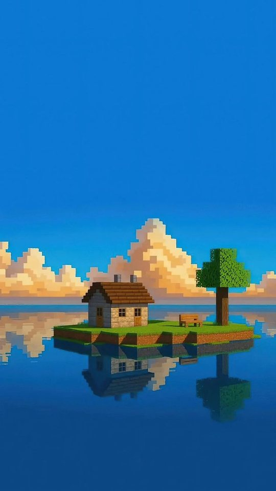
Minecraft Anime Skins: A Practical Guide
Anime skins are one of the most popular ways to customise a Minecraft character, but the process trips people up because Java and Bedrock handle skins…
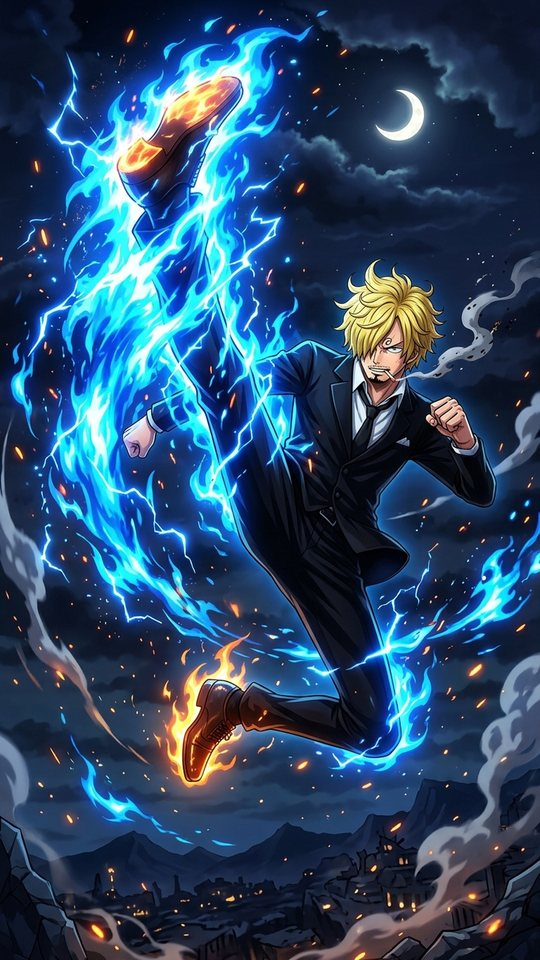
One Piece Wallpapers: Ranking the Straw Hats by Art Quality
One Piece has been running long enough that its artwork has passed through several distinct looks, and that range is exactly what makes it such a rich…
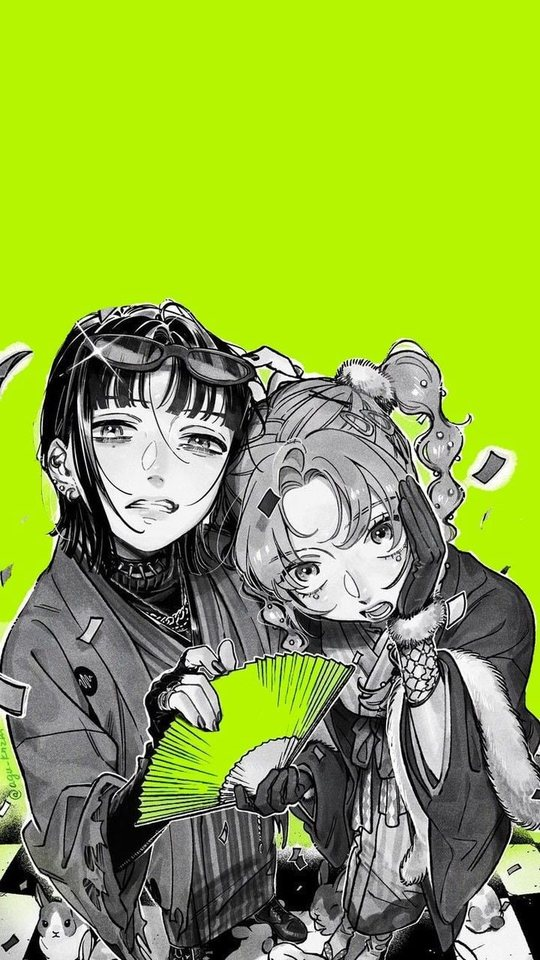
How Anime Wallpaper Apps Work — and How to Pick a Good One
This guide explains how wallpaper apps actually fetch and store the images you see, then gives you a checklist for judging whether a particular app is…

10 Best Anime Games on Android in 2026
There are more anime-style games on Android than anyone can reasonably try, so this list focuses on ten that are worth a look, with a plain reason to play…
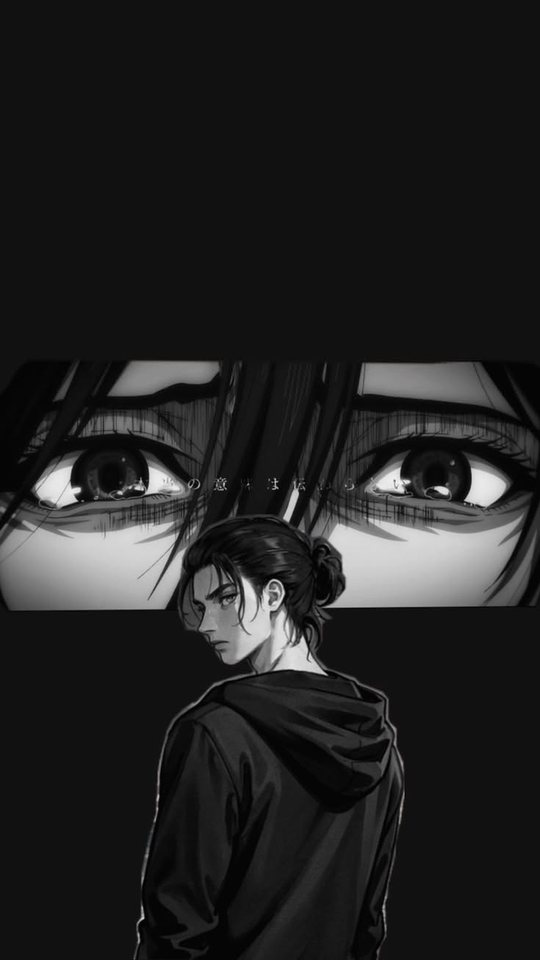
Attack on Titan Wallpapers: The Most Iconic Scenes and How to Use Them
Attack on Titan looks different from most anime wallpapers, and that difference is exactly what makes it work. This guide covers the most recognisable…
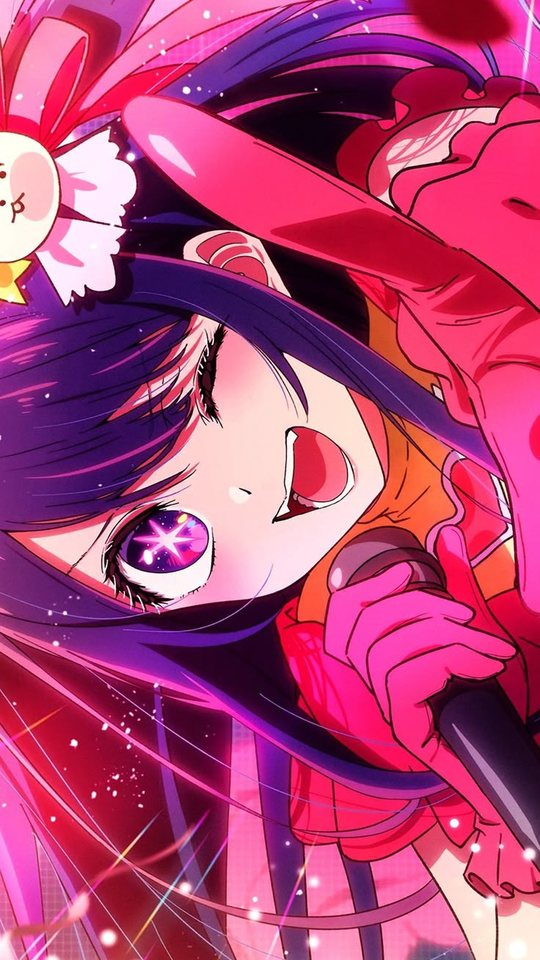
Anime Art Styles Explained: Cel-Shading, Digital Painting and AI Art
This guide explains the main art styles you will see in anime wallpapers, namely cel-shading, digital painting, watercolour and AI-generated work, and how…
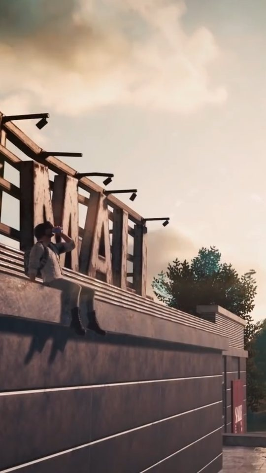
BGMI Wallpapers: The Best Weapon and Character Art
BGMI gives players an enormous amount of visual material to work with: weapon skins, character outfits and detailed maps. This guide looks at what…
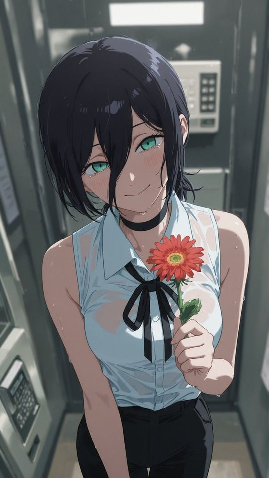
Chainsaw Man Wallpapers: Denji, Pochita and the Art That Works Best
Chainsaw Man has one of the boldest colour identities in modern anime, and that makes it both a gift and a trap for wallpapers. This guide covers Denji,…

How to Crop and Optimise an Anime Wallpaper Without Ruining It
This guide covers the practical rules for cropping an anime image into a phone wallpaper without cutting off the parts that matter. It explains where to…
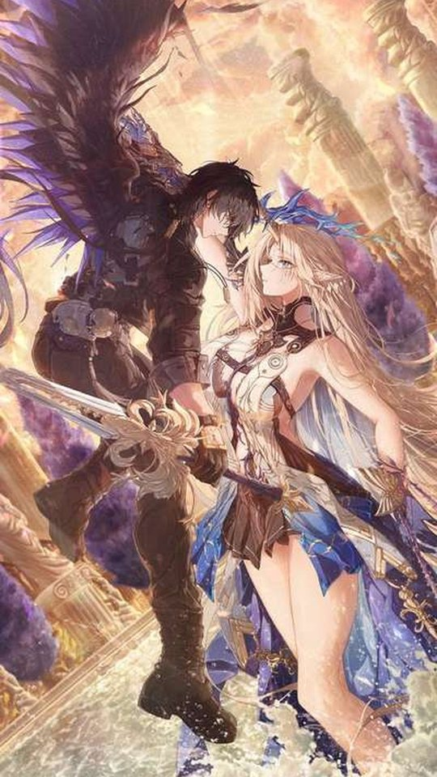
Wuthering Waves Wallpapers: Hsin, Carlotta and the Rest
Wuthering Waves has a distinctive visual identity, and its official character art is unusually well suited to portrait phone screens. This guide looks at…
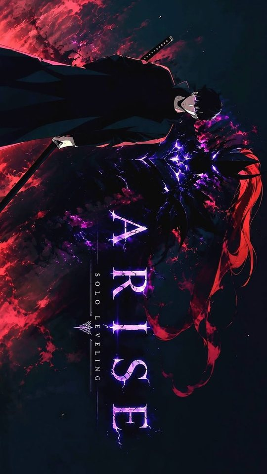
Solo Leveling Wallpapers: Sung Jin-Woo's Best Art, Ranked
Solo Leveling is one of the few series whose art was designed to look best on a screen, which makes it a natural fit for phone wallpapers. This guide…
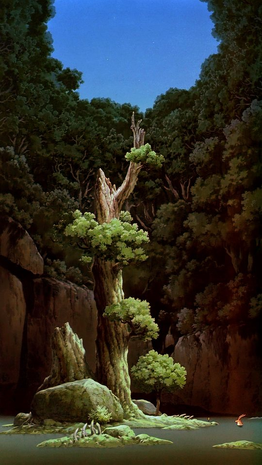
Why 1080×1920 Matters: An Anime Wallpaper Resolution Guide
This guide explains how phone screen resolution and aspect ratio affect how an anime wallpaper looks once it is set. You will learn how to find your own…
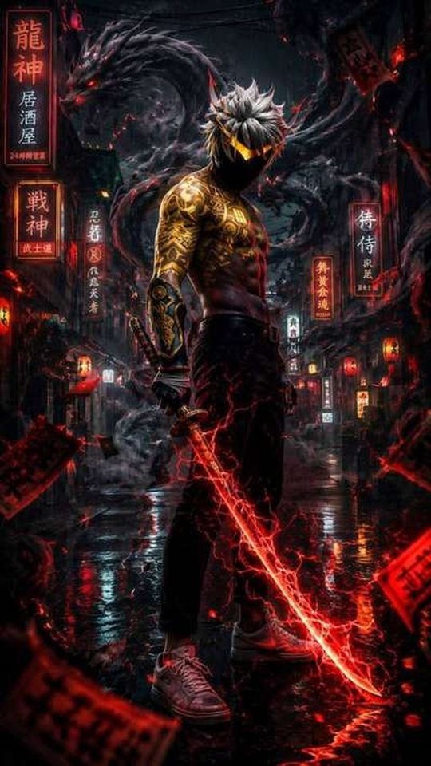
Free Fire Wallpapers: Characters, Skins and What Actually Looks Good
A good Free Fire wallpaper is not simply a screenshot of your favourite character standing in the lobby. This guide looks at which Free Fire characters…
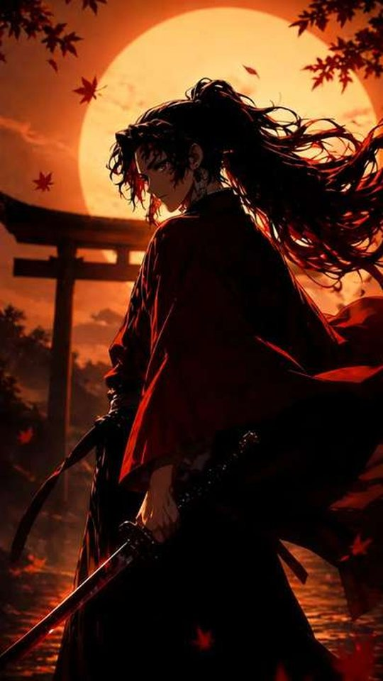
Demon Slayer Wallpapers: Every Hashira Ranked for Your Lock Screen
Demon Slayer is a show built on colour, and that makes it unusually good material for a phone wallpaper. This guide ranks all nine Hashira, plus Tanjiro…

How to Set a Live Wallpaper on Android (Step by Step)
This guide walks you through setting a live wallpaper on any modern Android phone, including the differences between Samsung, Xiaomi, Pixel and OnePlus…
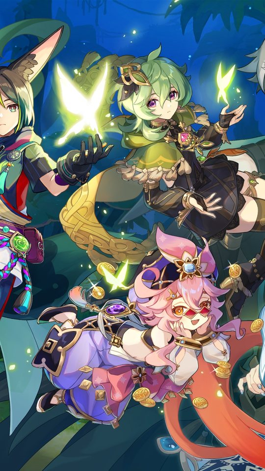
Genshin Impact Wallpapers: Best Characters for Your Home Screen
Genshin Impact has one of the most consistent art styles in gaming, and its elemental system gives every character a built-in colour theme you can build a…
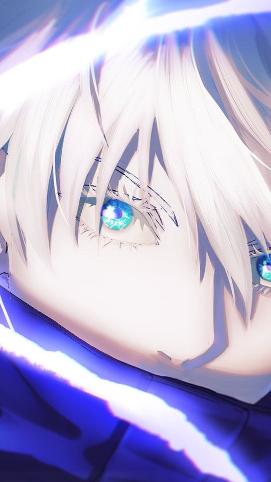
Jujutsu Kaisen Wallpapers: The Best Characters for Your Phone
A phone wallpaper has to survive being glanced at dozens of times a day, so it needs to read clearly at a small size and in a hurry. This guide works…
Want the wallpapers without the hunting?
AniPix is a free Android app with thousands of HD anime wallpapers, live wallpapers and daily updates.
Get the AniPix app